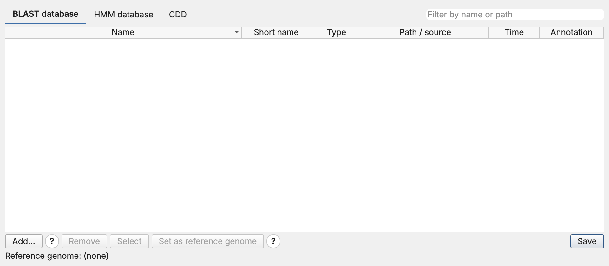
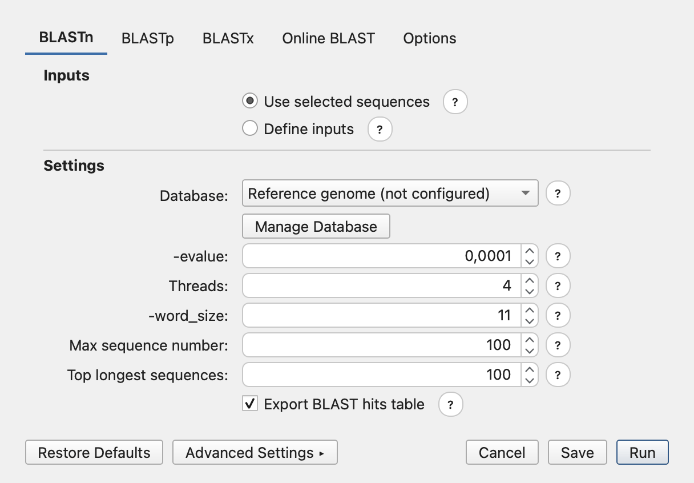
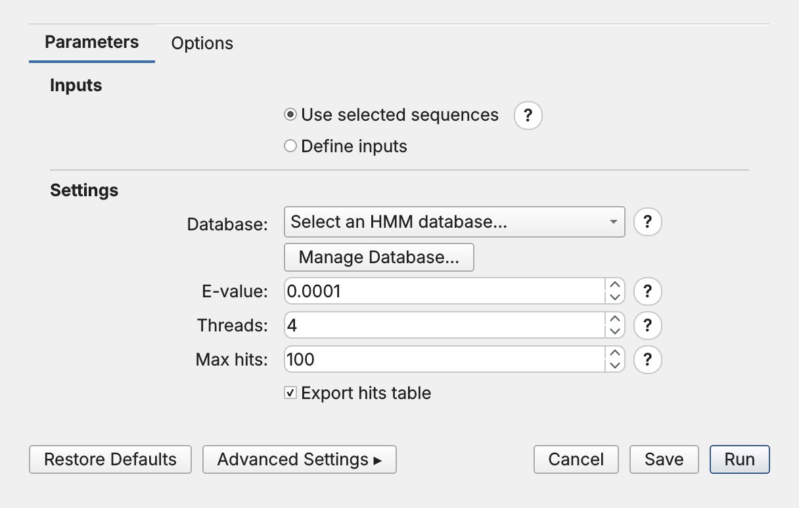

Chapter 7Search
7.1Manage Database
File → Manage Database… (⇧⌘G / Ctrl+Shift+G) keeps the genomes, sequence libraries and profile databases your searches use. The same window opens from the Manage Database buttons in the BLAST, HMMER, TE-Aid and MSA Extend windows.

The window has three tabs:
| Tab | Holds | Used by |
|---|---|---|
| BLAST database | FASTA DNA (genomes, TE libraries) and FASTA Protein (protein libraries such as REXdb) | BLAST, TE-Aid, MSA Extend, similarity annotation |
| HMM database | HMM DNA and HMM Protein profile files (Pfam, Dfam) | HMMER, similarity annotation |
| CDD | NCBI Conserved Domain Database folders | Similarity annotation (RPS-BLAST) |
Columns: Name (defaults to the file name), Short name (up to 15
characters, the label used for its features; - when empty), Type,
Path / source, Time (when it was added) and Annotation (tick to use
it in similarity annotation). Click a header to sort; type in the filter box to
find an entry.
- Add…: choose a file and its Type. The type decides which tab it goes to; every type can be added from every tab. While the window is open, clicking a FASTA in the Files panel fills the path. BLAST indexes are built in the background into the BLAST databases folder set in File → Setting → General.
- Remove: forget the selected entries (the original files stay).
- Set as reference genome: make the selected FASTA DNA the project genome. Tools that compare with "the genome" (BLAST, MSA Extend, TE-Aid, boundary prediction, genome plots) use it. The current reference genome is named under the table. A chromosome sizes file is written for every FASTA DNA database.
- Annotation: tick to show the database in the Annotation tab's similarity search.
A FASTA can also be added straight from the Files panel: right-click → Add as BLAST Database….
7.2BLAST
Toolbar: BLAST · Tools → Search → BLAST
Searches the selected sequences against the reference genome or a saved database with BLAST+ (bundled).

The window has a tab per program: BLASTn (DNA against DNA), BLASTp (protein against protein), BLASTx (translated DNA against protein) and Online BLAST, plus Options. Run runs the tab you are on. Each selected file is searched separately.
| Setting | Default | Meaning |
|---|---|---|
| Database | Reference genome | The genome, or a saved BLAST database; Manage Database adds one |
| -evalue | 0.0001 | E-value cut-off; lower keeps fewer, more significant hits |
| Threads | CPU count minus the reserve | -num_threads |
| -word_size | 11 (BLASTn) | Seed length. Smaller is more sensitive and much slower on repetitive genomes |
| Max sequence number | 100 | At most this many hit sequences go into the extracted FASTA |
| Top longest sequences | 100 | Of those, this many are the longest hits; the rest are picked at random |
| Export BLAST hits table | on | Keep the tabular hit table |
| Advanced: -gapopen, -gapextend, -penalty, -perc_identity, -qcov_hsp_perc | BLAST+ defaults | Gap and mismatch costs, minimum identity and query coverage |
Max sequence number and Top longest sequences matter for high-copy elements: without a cap, a family with thousands of copies gives an alignment too big to work with. Taking the longest copies first keeps full-length copies in the set. Option meanings follow the NCBI BLAST+ user manual.
Outputs (next to the query; bn for BLASTn, bp for BLASTp, bx for
BLASTx):
| File | Contents |
|---|---|
<name>_bn.txt |
Tabular hit table (outfmt 6). Input for the genome plots |
<name>_bn.txt.fa |
The hit regions cut out of the genome: the input for Align |
<name>_bn.gff |
Hit positions as GFF, when GFF output is on |
Online BLAST
The Online BLAST tab sends one sequence to NCBI's servers, for example to see whether a new satellite or TE matches anything known.
| Setting | Meaning |
|---|---|
| Program | blastn, blastp, blastx, tblastn or tblastx |
| Database | NCBI databases as on the BLAST website: core_nt (default), nt, refseq, nr, swissprot and others |
| Max hits | How many hits NCBI returns |
| Export BLAST hits table | Also keep the table <name>_obn.txt |
Each query file must hold one sequence (split a multi-FASTA first with
right-click → Separate Sequence into N Files). The result is an HTML report,
<name>_obn.html, which opens in Preview. Hits can also be added to the
sequence as annotations, coloured by identity.
7.3HMMER
Tools → Search → HMMER
Searches the selected sequences against an HMM profile database (Pfam, Dfam, REXdb domain profiles) with pyhmmer.

| Setting | Default | Meaning |
|---|---|---|
| Database | An HMM database from Manage Database | |
| E-value | 0.0001 | Reporting threshold |
| Threads | Parallel threads | |
| Max hits | 100 | Most hits kept per query |
| Export hits table | on | Write the hit table |
Protein profiles are searched against the ORFs of DNA queries. The hit table is
written as <name>_hmmer.txt next to the query (_hmmer1.txt, _hmmer2.txt,
… on later runs).